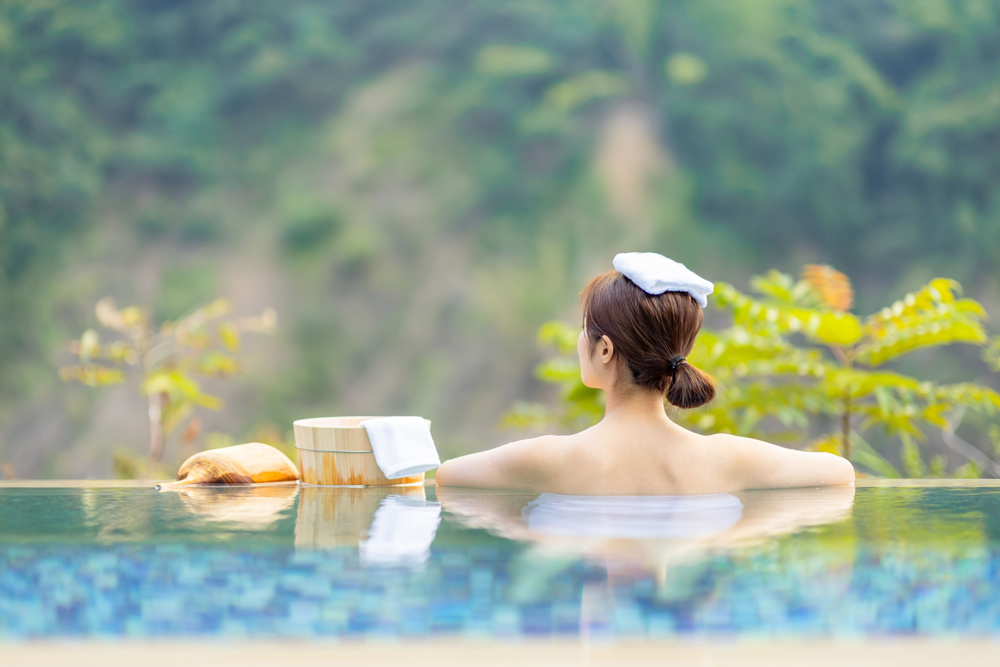
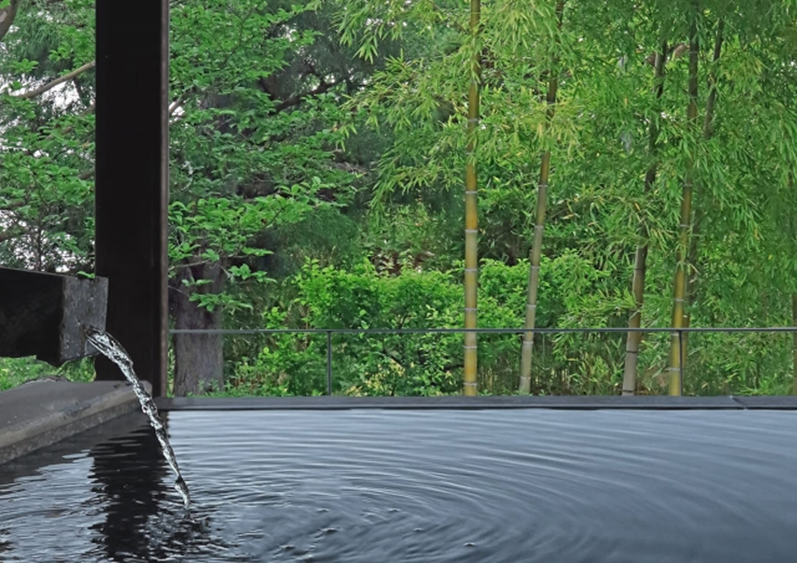
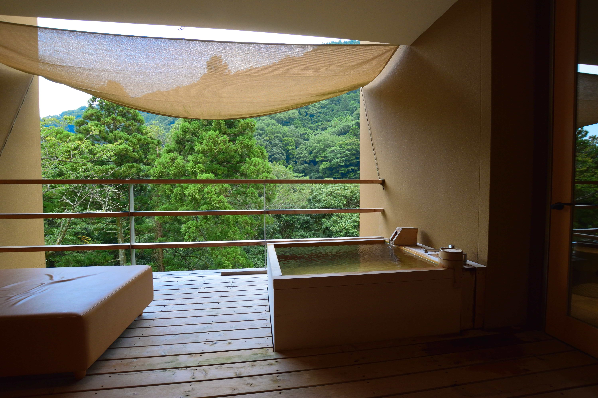

肌に優しいアルカリ性単純泉。
アルカリ性単純泉の湯は、肌に優しく、美肌の湯として古くから親しまれてきました。
特に、乾燥した肌や敏感肌の人々にとっては、保湿効果があり、温泉に浸かることで
しっとりとした肌に導かれます。
お子様から大人まで、どなたでも安心して楽しめる泉質です。

泉質・効能
Onsen当館自慢の源泉掛け流し。心ゆくまで癒やしのひとときをお過ごしください。
温泉分析
泉質 … アルカリ性単純泉
泉温 … 87.1 度
湧出量 … 毎分1,600 リットル（動力）
pH 値 … 7.66（ガラス電極法）
浴用の適用症
神経痛、筋肉痛、関節痛、うちみ、くじき、冷え性、病後回復期、疲労回復、健康増進、きりきず、やけど、慢性婦人病
飲用の適用症
慢性消化器病、慢性便秘
大浴場
Onsen
広々とした大浴場を、男女それぞれにご用意しております。 ゆったりとした湯船に身を委ね、日々の疲れを癒しながら、心安らぐひとときをお過ごしください。
ご利用時間
6:00〜10:00 / 16:00〜24:00
We offer spacious public baths for both men and women. Relax and unwind in the generous baths, soothe your body from the day’s fatigue, and enjoy a moment of peaceful relaxation.
Hours of Operation
6:00-10:00 / 16:00-24:00
露天風呂
Open-Air Onsen
開放感あふれる露天風呂を、男女それぞれにご用意しております。 四季折々の景色と澄んだ外気に包まれながら、ゆったりと湯に身を委ね、心ほどけるひとときをお過ごしください。
ご利用時間
6:00〜10:00 / 16:00〜24:00
We offer spacious public baths for both men and women. Immerse yourself in the expansive waters, ease away the day’s fatigue, and indulge in a moment of refined tranquility.
Hours of Operation
6:00-10:00 / 16:00-24:00
家族風呂
Private Onsen
ご家族や大切な方とご利用いただける、貸切の家族風呂をご用意しております。 周囲を気にすることなく、ゆったりと湯に身を委ね、心安らぐひとときをお過ごしください。
ご利用時間
6:00〜10:00 / 16:00〜24:00
We offer private baths for families and couples. Unwind in an exclusive setting, immerse yourself in the tranquil waters, and indulge in a serene and intimate moment.
Hours of Operation
6:00-10:00 / 16:00-24:00
もりのサロン
Relaxation & Spa柔らかな灯りと木の香りに包まれる「もりのサロン」。熟練のセラピストによるオールハンドのトリートメントが、日々の忙しさで強張った心身を深い解放へと導きます。森の息吹を感じながら、自分を慈しむ至福のひとときをご堪能ください。
ご利用時間
受付 15:00〜19:00 最終スタート 20:00〜

フェイシャル
Facial Programボディ
body Program
酵素風呂
Enzyme Bathひのきのおがくずと野草酵素が発熱する自然のぬくもり。電気やガスを使わず、微生物の力だけで温まる酵素風呂は、体の芯からじっくりと温め、心地よい発汗を促します。デトックス効果とともに、お肌もしっとりと整う癒やしの時間をお楽しみください。
ご利用時間
15:00〜21:00（最終受付 20:00）
お土産
Souvenir shop柔らかな灯りと木の香りに包まれる「もりのサロン」。熟練のセラピストによるオールハンドのトリートメントが、日々の忙しさで強張った心身を深い解放へと導きます。森の息吹を感じながら、自分を慈しむ至福のひとときをご堪能ください。
ご利用時間
9:00〜20:00